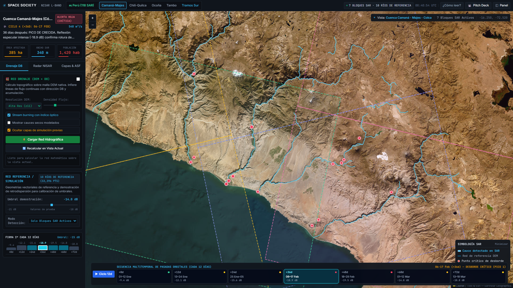
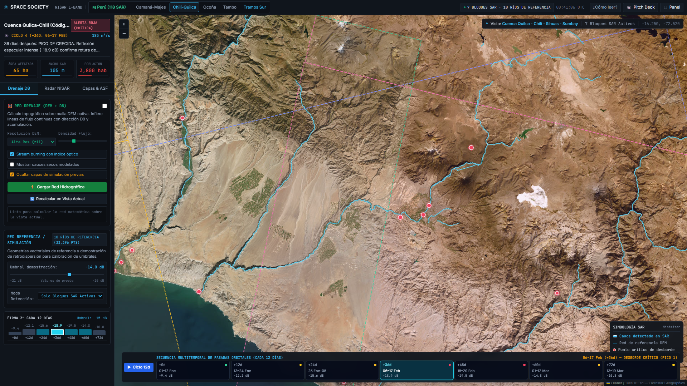
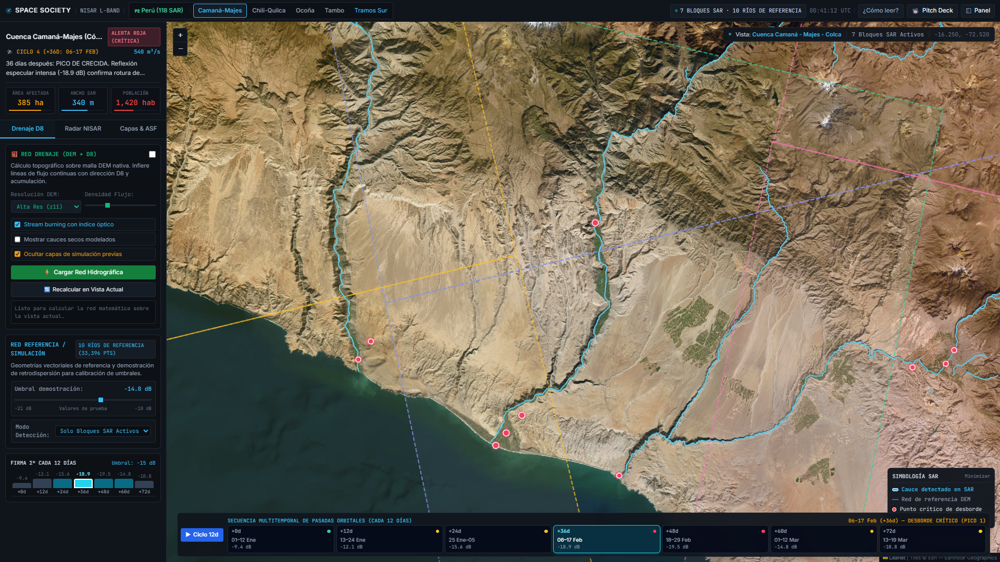

Dry Rivers Turn into Deadly Flash Floods in Hours.
In arid mountainous watersheds like the Peruvian Andes, ephemeral riverbeds remain dry for months—until sudden torrential cloudbursts trigger catastrophic mudslides (huaicos).

Why Standard SAR & NASA OPERA Collapse.
DSWX-SAR pipeline. In narrow Andean channels, bimodal thresholding failed (threshold array is empty).
Direct NASA ASF Ingestion: NISAR L2 GCOV
Instead of relying on web mockups, we ingest raw HDF5 scientific granules from NASA ASF (Earthdata Cloud):
- ✔ Native 20m regular grid in EPSG:32719 UTM
- ✔ Full-polarization HHHH & HVHV gamma0 power
- ✔ Radiometrically terrain-corrected (GCOV)
- ✔ Exact bitset mask handling (excluding anomaly bits)
Multi-Scale Top-Hat Geometry Extraction
Rivers are defined by spatial geometry, not a static decibel color. Our custom engine (gcov_rivers.py) executes:

Over 60% Agreement with Ground Hydrology.
We benchmarked the detected channels against the verified regional river network (validate_nisar.py) within a strict 120m buffer:
Every river reach carries live telemetry: length, mean width, elongation ratio, and backscatter profile.
12-Day Orbital Repeat Flood Intelligence.
NISAR operates on an exact 12-day orbital repeat cycle. Our dashboard provides decision-makers with:
- 🔄 Dual-date change detection (receding vs. expanding channels)
- 📊 Real-time inundation area calculations (hectares)
- 🏘️ Downstream vulnerable population exposure mapping
- 🚨 Automated civil defense red alerts (+36d flood peak)
